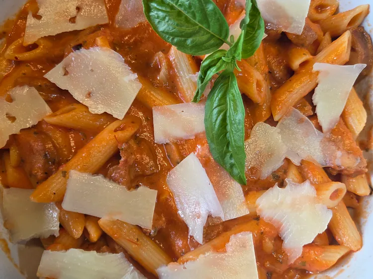

20-minute-sausage-pasta

Description
A quick and tasty meal for the whole family!
Ingredients
- 8 ounces penne pasta
- 2 italian chicken sausages
- 1 tablespoon olive oil
- 1 clove garlic, finely minced
- 2 tablespoon butter
- 12 ounces marinara sauce
- 1/4 cup heavy cream
- freshly grated parmesan cheese
Steps
- Bring a large pot of salted water to a boil,
add pasta and cook until tender with a bite.
Reserve about 1/4 cup pasta water;drain
- Slice chicken sausages in half, the slice each
half into small bite-sized pieces
- Heat oil in a skillet over medium heat and
add sausage. Cook and stir until sausage is lightly
browned, about 3 minutes. Scrape up any browned bits
from the bottom of the skillet
- Add butter and garlic to the skillet;cook until garlic
is fragrant, about 1 minute
- Add marinara sauce and cream to the skillet.
Cook until combined and completely warmed through
Stir in pasta. If sauce is too thick, thin with a little
pasta water
- Remove from heat and add in as much parmesan
as you like. Serven in bowls and enjoy with bread